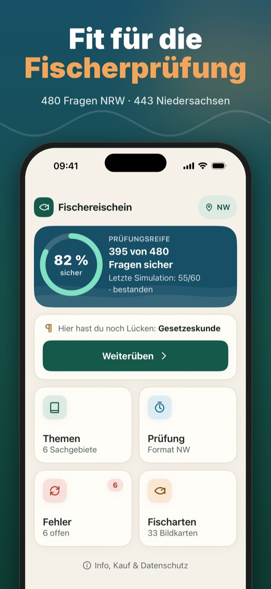
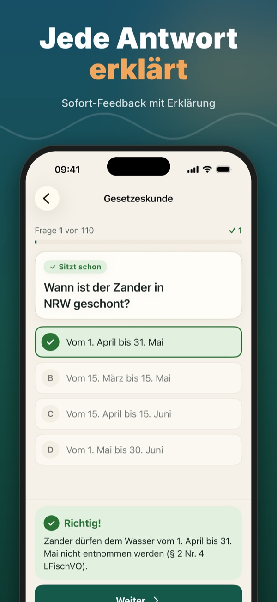
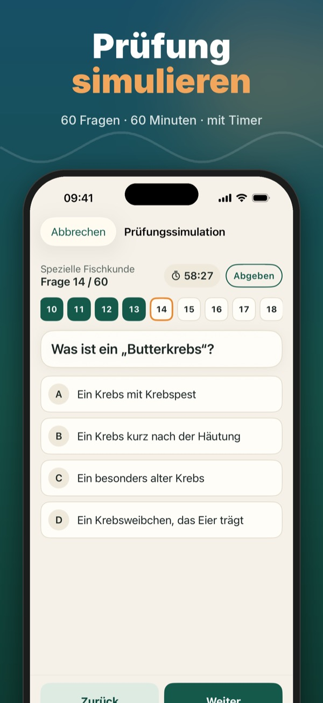
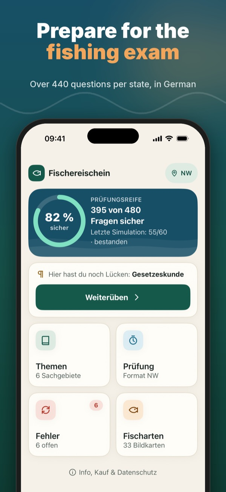
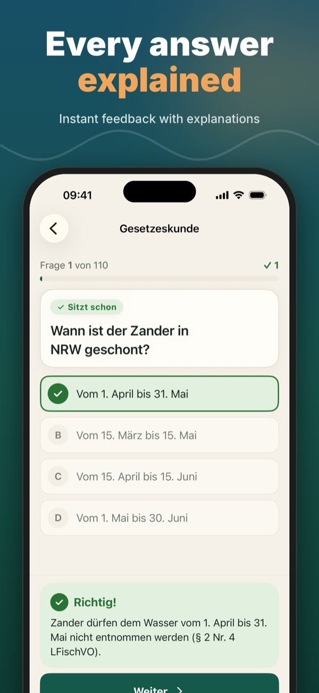
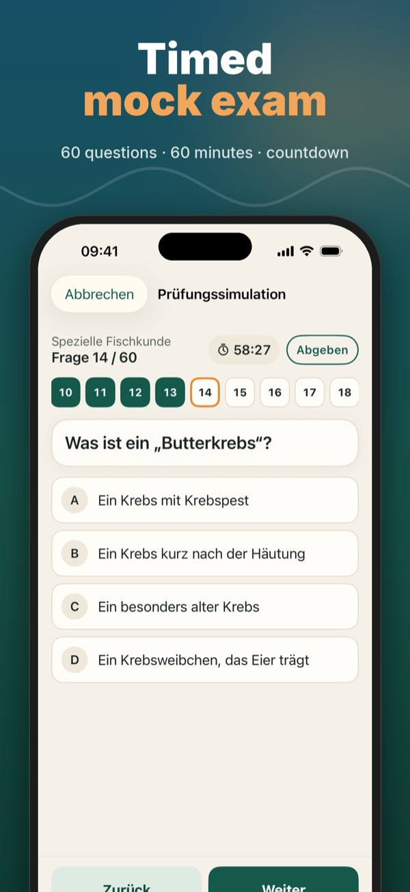

Fischerprüfung Fragen & Test



Bestehe die Fischerprüfung im ersten Anlauf! Übe für deinen Fischereischein bzw. Angelschein mit Fragen im Format deines Bundeslands – zuerst Nordrhein-Westfalen und Niedersachsen, weitere Länder folgen.
Ohne Kauf enthalten: je Sachgebiet 5 Übungsfragen, eine Prüfungssimulation und 6 Fischkarten. Die Vollversion schaltet alle Fragen, unbegrenzte Simulationen und alle 33 Fischkarten frei – einmal zahlen, kein Abo, keine Werbung.
Deine Daten bleiben auf deinem Gerät. Kein Konto, keine Anmeldung.
Hinweis: Diese App ist ein privates Lernangebot und steht in keiner Verbindung zu Behörden, Ministerien oder Fischereiverbänden. Die Fragen sind eigene Übungsfragen, keine Fragen aus amtlichen Fragenkatalogen. Maßgeblich sind die geltenden Rechtsvorschriften deines Bundeslands.
Datenschutz: https://baytechbv.github.io/privacy/fischereischein/
Nutzungsbedingungen (EULA): https://www.apple.com/legal/internet-services/itunes/dev/stdeula/
Fischerprüfung Fragen & Test



Prepare for the German fishing licence exam (Fischereischein / Angelschein). Practise with questions in the format of your federal state – North Rhine-Westphalia and Lower Saxony first, more states to follow. The app is in German.
Included without purchase: 5 practice questions per subject, one exam simulation and 6 fish cards. The full version unlocks all questions, unlimited simulations and all 33 fish cards – pay once, no subscription, no ads.
Your data stays on your device. No account, no sign-in.
Note: This app is an independent learning aid and is not affiliated with any authority, ministry or angling association. The questions are our own practice questions, not taken from official question catalogues. The law of your federal state applies.
Privacy: https://baytechbv.github.io/privacy/fischereischein/
Terms of Use (EULA): https://www.apple.com/legal/internet-services/itunes/dev/stdeula/